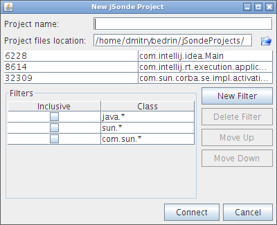

jSonde allows you to analyze existing Java applications.
It can generate sequence diagrams, measure performance (both cpu and memory) and build different reports, like jar dependencies and others.
jSonde doesn't require any specific knowledge for using it and supports various operation systems and Java environments.
jSonde consists of two main components:
There're two main ways to attach jSonde agent to java applications - you can either specify additional parameters to java command or you can attach the agent dynamically without even restarting your application.
This is the simplest way to attach jSonde agent to your application
Select "File" \ "Attach to Sun JVM" menu item, and you'll see the dialog like shown below:
In this dialog there's a list of all java applications running on your computer
Other fields in this dialog will be explained in the other chapter of this manual
Please note, that this feature may be unavailable on some virtual machines. It was properly tested only on Sun JVM 1.6+
Let's assume that you execute your java application using following command
java -jar app.jar
In order to execute this application with jSonde agent, you need to add new parameters like shown below:
java -javaagent:<path-to-jSonde-folder>/lib/jsonde.agent-1.1.0.jar=60001 -jar app.jar
By no means you can use jSonde to analyze not only J2SE applications. You can find a few examples of using jSonde with Tomcat, JBoss and other environments below.
File: %TOMCAT_HOME%\bin\catalina.bat
Add the following line:
set JAVA_OPTS=-javaagent:<path-to-jSonde-folder>/lib/jsonde.agent-1.1.0.jar=60001 %JAVA_OPTS%
If you use the windows service or system tray startup use the following parameters instead:
-javaagent:<path-to-jSonde-folder>/lib/jsonde.agent-1.1.0.jar=60001
File: $TOMCAT_HOME/bin/catalina.sh
Add the following line:
JAVA_OPTS="-javaagent:<path-to-jSonde-folder>/lib/jsonde.agent-1.1.0.jar=60001 $JAVA_OPTS"
File: %JBOSS_HOME%\bin\run.bat
Add the following line:
set JAVA_OPTS=-javaagent:<path-to-jSonde-folder>/lib/jsonde.agent-1.1.0.jar=60001 %JAVA_OPTS%
File: $JBOSS_HOME/bin/run.sh
Add the following line:
JAVA_OPTS="-javaagent:<path-to-jSonde-folder>/lib/jsonde.agent-1.1.0.jar=60001 $JAVA_OPTS"
Just check your application server configuration for the place, where you should specify jvm parameters
Hint: this is the same place where you should specify memory options -Xms & -Xmx
You can analyze applets running inside a browser with Java Plugin installed.
Please add the following option in "Java(TM) Plug-in Control Panel", on the "Advanced" tab, in the field "Java Runtime Parameters":
-javaagent:<path-to-jSonde-folder>/lib/jsonde.agent-1.1.0.jar=60001
On Windows, "Java(TM) Plug-in Control Panel" is accessible from the Windows "Control Panel"
Important: If the browser is running, you must restart it after you have made the changes.
You can also analyze applets started with appletviewer command by passing -J-javaagent:<path-to-jSonde-folder>/lib/jsonde.agent-1.1.0.jar=60001 as a command line parameter.
After you've added jSonde agent to java parameters and started your application, you'll se the following message in output:
jSonde agent started
Now you need to start jSonde GUI and select "File" \ "New Project" menu item
After that you'll see a dialog like shown below. It's pretty similar to one, we've described in chapter "Attaching agent dynamically" above. Hence the meaning of the similar fields in these two dialogs is the same

| Project name | The name of your project. It will be used for creating jSonde project files |
| Project files location | Specifies a folder for storing jSonde project files. Each project consists of several files with the same name but different extensions |
| Agent host | The IP address of the computer where jSonde agent is running. Value "127.0.0.1" is fine if you're executing jSonde GUI and jSonde agent on the same computer |
| Agent port | TCP port for communicating between jSonde agent and GUI |
| Filters | Allows you to specify filters for analyze. See chapter below |
jSonde allows you to specify filters in order to analyze only specified list of classes
It will allow you to analyze only your own classes and also improves performance
Let's assume that your classes are all located in package "com.mycompany"
In this case first of all we need to exclude all classes and after that include classes from "com.mycompany" package: Exclude "*"; Include "com.mycompany.*"
Now click on "Connect" button as that's it - you're ready to start working with jSonde
You can use main menu or accordion pane on the left for opening different views: sequence diagrams, reports, profiling and so on
Select "Sequence Diagrams" pane and you'll see a tree with classes of your applications. The leaves of this tree are "root" method calls discovered by jSonde agent.
"root" method call is the first method invocation inside the specified classes scope (see section about filters above)
If you double click on the selected method, a new tab with sequence diagram will be opened in the workspace
You can use buttons in toolbar for tuning the diagram view; mouse drag is also supported for scrolling the diagram

Select "Reports" pane in order to view the list of available reports. They're also accessible through main menu
This report allows you to browse the dependencies of code sources (.jar files for example) inside your project
Sometimes it can be very useful to find missing or redundant dependency

This report shows the top code sources by execution time.
It allows you to find the most "slow" or rather most "used" method grouped by jar files

This report shows you the top method throwing any exceptions
If a method throws an exception a lot of time, it could be a good idea to review it's interface

jSonde supports both cpu and memory profiling, and allows you to find most executed methods, most created objects and so on
Click on "Profiler" in accordion panel on the left, and select appropriate profiling view
CPU profiler shows you method invocation counters and total execution time of the methods
For convenient browsing, this data is shown as a tree

Heap analyzer allows you to browse the snapshot of java memory heap and analyze what objects are created most often, what objects consume the largest amount of memory and other values